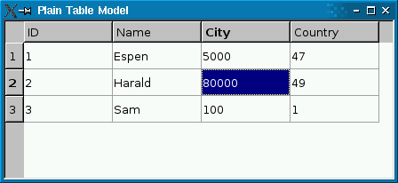

QSqlRelationalTableModel Class Reference
[QtSql module]
该QSqlRelationalTableModel类提供了一个可编辑的数据模型为单个数据库表，与外键的支持。More...
继承QSqlTableModel。
Types
Methods
-
__init__ (self, QObject parent = None, QSqlDatabase db = QSqlDatabase())
-
clear (self)
-
QVariant data (self, QModelIndex index, int role = Qt.DisplayRole)
-
bool insertRowIntoTable (self, QSqlRecord values)
-
QString orderByClause (self)
-
QSqlRelation relation (self, int column)
-
QSqlTableModel relationModel (self, int column)
-
bool removeColumns (self, int column, int count, QModelIndex parent = QModelIndex())
-
revertRow (self, int row)
-
bool select (self)
-
QString selectStatement (self)
-
bool setData (self, QModelIndex index, QVariant value, int role = Qt.EditRole)
-
setJoinMode (self, JoinMode joinMode)
-
setRelation (self, int column, QSqlRelation relation)
-
setTable (self, QString tableName)
-
bool updateRowInTable (self, int row, QSqlRecord values)
Detailed Description
该QSqlRelationalTableModel类提供了一个可编辑的数据模型为单个数据库表，与外键的支持。
QSqlRelationalTableModel就像QSqlTableModel，但允许列要被设置为外键成其他数据库表。
|  |
 |
左边的屏幕截图显示了纯QSqlTableModel在QTableView。外键（city和country）不会被解析为可读价值。右边的屏幕截图显示了QSqlRelationalTableModel ，与外键分解成可读的文本字符串。
下面的代码片段显示了QSqlRelationalTableModel是如何设置：
model->setTable("employee");
model->setRelation(2, QSqlRelation("city", "id", "name"));
model->setRelation(3, QSqlRelation("country", "id", "name"));
该setRelation（ ）函数调用建立两个表之间的关系。第一次调用指定表2列employee是，与字段映射外键id表city，而认为应该提出的city的name字段给用户。第二次调用是否与第3列类似的东西。
如果你使用一个读写QSqlRelationalTableModel ，你可能想使用QSqlRelationalDelegate在视图上。不同的是默认的委讬，QSqlRelationalDelegate提供了一个组合框是外键到其他表中的字段。使用类，只需调用QAbstractItemView.setItemDelegate（ ）与实例的视图QSqlRelationalDelegate：
QTableView *view = new QTableView;
view->setModel(model);
view->setItemDelegate(new QSqlRelationalDelegate(view));
该sql/relationaltablemodel示例说明了如何使用QSqlRelationalTableModel与配合QSqlRelationalDelegate提供表外键的支持。

注意事项：
- The table must have a primary key declared.
- The table's primary key may not contain a relation to another
table.
- If a relational table contains keys that refer to non-existent
rows in the referenced table, the rows containing the invalid keys
will not be exposed through the model. The user or the database is
responsible for keeping referential integrity.
- If a relation's display column name is also used as a column
name in the main table, or if it is used as display column name in
more than one relation it will be aliased. The alias is is the
relation's table name and display column name joined by an
underscore (e.g. tablename_columnname). All occurrences of the
duplicate display column name are aliased when duplication is
detected, but no aliasing is done to the column names in the main
table. The aliasing doesn't affect QSqlRelation, so QSqlRelation.displayColumn()
will return the original display column name, but QSqlRecord.fieldName() will return
aliases.
- When using setData() the role
should always be Qt.EditRole, and when using
data() the role
should always be Qt.DisplayRole.
Type Documentation
QSqlRelationalTableModel.JoinMode
此枚举指定的模式连接两个表时要使用的类型。
| Constant |
Value |
Description |
|
QSqlRelationalTableModel.InnerJoin
|
0 |
内部联接模式，返回行的时候，至少有一个匹配两个表中。 |
|
QSqlRelationalTableModel.LeftJoin
|
1 |
LEFT JOIN模式，返回左表（ table_name1 ）的所有行，即使在右表（ table_name2 ）的结果。 |
这个枚举被引入或修改的Qt 4.8 。
See also QSqlRelationalTableModel.setJoinMode（ ） 。
Method Documentation
QSqlRelationalTableModel.__init__ (self, QObject parent = None, QSqlDatabase db = QSqlDatabase())
该parent的说法，如果不是没有，原因self通过Qt的，而不是PyQt的拥有。
创建一个空的QSqlRelationalTableModel并设置父parent与数据库连接db。如果db是无效的，默认的数据库连接将被使用。
QSqlRelationalTableModel.clear (self)
从重新实现QSqlQueryModel.clear（ ） 。
QVariant QSqlRelationalTableModel.data (self, QModelIndex index, int role = Qt.DisplayRole)
从重新实现QAbstractItemModel.data（ ） 。
See also setData（ ） 。
bool QSqlRelationalTableModel.insertRowIntoTable (self, QSqlRecord values)
从重新实现QSqlTableModel.insertRowIntoTable（ ） 。
QString QSqlRelationalTableModel.orderByClause (self)
从重新实现QSqlTableModel.orderByClause（ ） 。
QSqlRelation QSqlRelationalTableModel.relation (self, int column)
返回列的关系column或无效的关系，如果没有关系设定。
See also setRelation（）和QSqlRelation.isValid（ ） 。
QSqlTableModel QSqlRelationalTableModel.relationModel (self, int column)
返回QSqlTableModel对象，用于访问表的量column是外键，或者0，如果没有为给定的没有关系column。
返回的对象是由资QSqlRelationalTableModel。
See also setRelation（）和relation（ ） 。
bool QSqlRelationalTableModel.removeColumns (self, int column, int count, QModelIndex parent = QModelIndex())
从重新实现QAbstractItemModel.removeColumns（ ） 。
QSqlRelationalTableModel.revertRow (self, int row)
从重新实现QSqlTableModel.revertRow（ ） 。
bool QSqlRelationalTableModel.select (self)
从重新实现QSqlTableModel.select（ ） 。
QString QSqlRelationalTableModel.selectStatement (self)
从重新实现QSqlTableModel.selectStatement（ ） 。
bool QSqlRelationalTableModel.setData (self, QModelIndex index, QVariant value, int role = Qt.EditRole)
从重新实现QAbstractItemModel.setData（ ） 。
设置数据的role在用指定的项index到value给出。取决于编辑策略，则该值可能被应用到数据库一次，或者它可以在模型中被缓存。
返回True如果该值可以设置，或虚假的错误（例如，如果index是出界） 。
对于关系栏目，value必须是索引，而不是显示值。该指数还必须存在于被引用表，否则返回False 。
See also editStrategy（ ）data（ ）submit（）和revertRow（ ） 。
QSqlRelationalTableModel.setJoinMode (self, JoinMode joinMode)
设置SQL加盟模式由给定的值joinMode要显示或隐藏与NULL外键的行。
In InnerJoin模式（默认）这些行不会被显示;使用LeftJoin模式下，如果你想向他们展示。
此功能被引入Qt的4.8 。
See also QSqlRelationalTableModel.JoinMode。
QSqlRelationalTableModel.setRelation (self, int column, QSqlRelation relation)
让指定的column可以通过指定的外国指数relation。
例如：
model->setTable("employee");
model->setRelation(2, QSqlRelation("city", "id", "name"));
该setRelation （ ）调用指定表2列employee是，与字段映射外键id表city，而认为应该提出的city的name字段给用户。
注：表中的主键可能不包含关系到另一个表。
See also relation（ ） 。
QSqlRelationalTableModel.setTable (self, QString tableName)
从重新实现QSqlTableModel.setTable（ ） 。
bool QSqlRelationalTableModel.updateRowInTable (self, int row, QSqlRecord values)
从重新实现QSqlTableModel.updateRowInTable（ ） 。